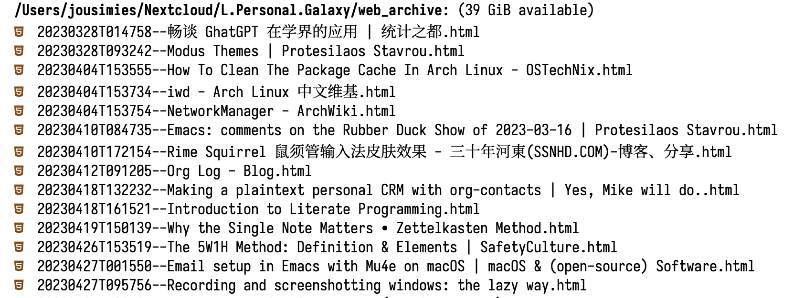
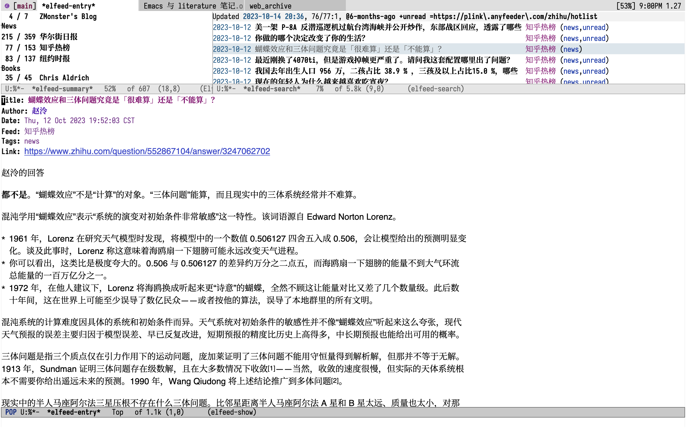
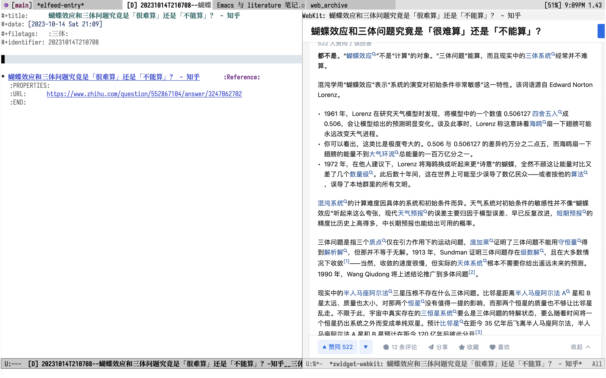

Emacs 与 literature 笔记
本文重点： 使用 Emacs 记录 Literature 笔记，最大化的利用 Emacs 对于纯文本的处理能力，使记录笔记的流程更流畅和顺滑。
Emacs 是免费、开源的编辑器，被认为是神的编辑器。我使用 Emacs 和 Org-mode 管理自己的笔记内容。
How to take smart notes 一书使得 Zettelkasten 笔记方法广为流传，我目前也借鉴该方法整理自己的笔记内容。
关于 Zettelkasten 的笔记方法本文不多述，有需要的去看书中的内容。在 How to take smart notes 一书中总结的做笔记的流程如下：
- 1. Make fleeting notes 做临时笔记
- 2. Make literature notes 做文学笔记
- 3. Make permanent notes 将临时笔记和文学笔记转化成永久笔记
- 4. Add new permanent notes to the slip-box 将永久笔记保存到slipbox中
- 5. Develop topic, questions and research project bottom up from within the system. 基于slipbox探索论点，提出问题，确定研究项目。
- 6. Decide on a topic to write about 确定topic
- 7. Turn your notes into a rough draft. 将笔记整理成草稿
- 8. Edit and proofread your manuscript. 修定草稿整理成最终稿
在上述的 8 个步骤中，第二种是 Literature notes。Literature Notes 顾名思义就是文献笔记，它的作用是记录永久笔记的资源，类似于期刊写作中引用的文献、新闻中的信息源。不要相信自己可以记住所有关注事物的来源，大脑的作用在于思考、决策而不是记忆，所有建立可靠的第二大脑是很必要的，首当其冲的是建立笔记管理系统。
我将 Literature 笔记分三种类型：参考文献笔记、读书笔记和其他保留信息来源的笔记。参考文献笔记更偏向于学术期刊的笔记，读书笔记就是看的书的笔记了，其他笔记就是除上述两种之外的所有笔记。
Literature 笔记第三种类型一般包括关注的博客、RSS 和一些网页的内容。当我阅读 RSS 内容时我会椐椐内容决定是否记录 Literature 笔记，如果需要，我会保存网页内容到本地，一般是 html 格式的，如下图所示。文件名主要由两部份组成：时间戳和文件名。时间戳可以保存初次阅读该文件的时候，后期可以用于筛选，文件名是网页名。

Figure 1: screenshot:webarchive
下面以我阅读 RSS 时记录 Literature 笔记的一般流程：

Figure 2: screenshot:elfeed
打开 Emacs 之后使用快捷键 C-c E 打开 elfeed-summary，如下上图左上角所示，列出了我关注的 RSS 源，右边是某个源更新的内容，我还没阅读的条目。打开某个条目显示在屏幕的下方，是某个内容的主体内容。我会椐据内容需要决定是否需要做该条目的笔记。如果需要则通过按键 “o”，使用 xwidget 打开该则内容的网页版，如下图所示：

Figure 3: screenshot: xwidget
在这个界面中调用按键 “M-<F10>” 调用 my/literature-save 函数，保存该网页到 web archive 文件夹，并创建 Literature 笔记条目，如下图所示。调用该函数之后会创建两个并列的界面，右边为笔记的主体内容，其中己经有一个条目，它带有一个链接，指向的是保存在本地的文件。此处它还有一个 Properties 条目，给出了该文件指向的是源文件的地址。椐据需要保存右侧文件的内容到左侧的笔记当中。

Figure 4: screenshot:literature笔记
以上的流程相比较使用浏览器打开网页，再创建笔记条目要简化了很多。使用 Emacs 管理笔记是最大化的使用了 Emacs 对于文本的处理能力，相比较 Onenote、Evernote 等传统的笔记管理软件，记录笔记的流程要更流畅、顺滑。